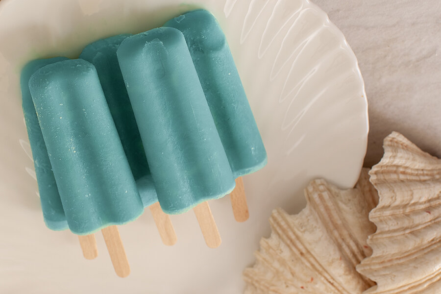

Home
Sea Salt Ice Cream

Description
Blue ice cream you eat with your homies after working for a nefarious organization
in order to feel like a person.
Ingredients
- Be in a "zombie" like state due to having been born, quite literally, yesterday
- 1 1/2 Cup of milk
- 1 1/2 Cup of cream
- 2 Friends, because if you don't, who else will you eat ice cream with?
- 1 Tall ass clock tower in which to sit atop
- 3 Tbsp of Cornstarch
- 3/4 Cup of sugar
- 1 Tsp of sea salt
- Trauma stemming from not knowing who you are
- Teal gel-based food coloring
Steps
- Mix together 1 ½ cups each of high quality milk and cream.
- Realize you're a clone of somebody else.
- Spiral.
- Combine 3 Tbsp cornstarch in about 1 cup of milk and cream mixture until it is dissolved and no lumps remain.
- Bring the remaining milk and cream mixture close to a simmer on the stovetop.
- Then, ¾ cup sugar is added directly to the milk and cream on the stovetop until it dissolves over medium-low heat until just simmering.
- At this point you will add the cornstarch mixture until combined. Let that all cook for about 1 minute.
- Add one heaping tsp of sea salt to custard on stovetop as it finishes thickening. Then strain into a heat-proof bowl. Add some gel-based teal food coloring.
- Make sure not to kill your friend who is slowly turning into the person you're a clone of.
- Into an ice cream machine it goes for about 25 minutes.
- Enjoy! :)